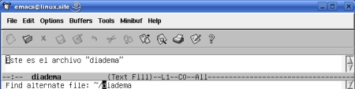

1. Abrir Archivos
1.1. Abrir Archivos
Pág.Anterior | Índice | Pág.Siguente
Emacs nos ofrece varias formas de abrir un archivo:
Desde la línea de comandos: asd@linux~:> emacs nombre_archivo
Especificando el nombre del archivo cuando se arranca Emacs desde la linea de comandos.
Mediante el comando : C-x C-f
Através de la opción de menú : File --> Open File..
Mediante el "comando largo" : M-x find-file <Enter>
Através del icono de la barra de herramientas :
También puede abrirse un archivo seleccionándolo y "arrastrándolo" ,con el ratón, sobre el icono de Emacs o al interior de la ventana de Emacs. No todas las versiones de Emacs ofrecen esta opción de apertura.
Las dos maneras más usuales de abrir un archivo son: mediante el comando C-x C-f y através de la opción del menú o el icono de la barra de herramientas. Nos vamos a centrar en ellas.
Veamos, gráficamente, la secuencia de apertura de un archivo :
Una vez dada la orden de apertura, Emacs traslada el cursor al mini-buffer y nos pide, mediante el mensaje Find file: , que introduzcamos el nombre del archivo:
Introducimos el nombre del archivo, en nuestro caso: practicas
Tras pulsar <Enter>, Emacs nos abre un nuevo buffer, con el nombre del archivo abierto.
Si introducimos el nombre de un archivo inexistente, como es el caso del ejemplo, Emacs abrirá un buffer vacio, advirtiéndonoslo con el mensaje: (New File).
En el caso de que se tratara de un archivo existente, su contenido será colocado en el buffer.
Cuando damos la orden de abrir un archivo, podemos observar como Emacs nos proporciona un directorio por defecto. (~/ en nuestros ejemplos gráficos).
Emacs fija el directorio por defecto teniendo en cuenta el directorio correspondiente al buffer sobre el que está el cursor.
Si se desea abrir un archivo que se encuentra en otro directorio, puede editarse el mini-buffer para cambiar el directorio presentado por defecto.
1.2. Autocompletado
Pág.Anterior | Índice | Inicio Página | Pág.Siguente
Un aspecto a tener en cuenta, a la hora de introducir el nombre de archivo en el mini-buffer, es la opción de auto-completado que nos proporciona la tecla <Tab> . Bastará con introducir los primeros carácteres del nombre del archivo, pulsar la tecla <Tab> y el nombre se completará.
Si existieran varias alternativas posibles, se nos mostrarán en una ventana. Podremos seleccionar el archivo deseado, bién tecleando más carácteres, hasta que resulte ser la única opción, o bién seleccioándolo directamente de la lista de opciones, usando para ello el ratón.
En ambos casos la elección se hará efectiva trás la pulsación de <Enter>.
La siguiente figura nos muestra el resultado de introducir los caracteres dia en el mini-buffer y pulsar la tecla <Tab>.
Como podemos ver, se nos muestran tres posibles nombres de archivo: dia, diario y diadema.
1.3. Sustitución de archivos
Pág.Anterior | Índice | Inicio Página | Pág.Siguente
Teniendo un archivo abierto en un buffer, podemos sustituirlo por otro archivo con el comando:
Comando : C-x C-v
Comando "largo" : M-x find-alternate-file <Enter>
Esta funcionalidad no dispone de opción de menú.
Emacs colocará en el mini-buffer el nombre del archivo actual, de modo que pueda ser modificado. Entrando el nuevo nombre y pulsando <Enter> Emacs reemplazará el contenido del buffer por el archivo alternativo.
Si en el archivo que deseamos sustituir se hubiesen realizado cambios, Emacs nos lo advertirá y nos pedirá confirmar la sustitución.
¡Realizar la sustitución sin antes haber guardado los cambios, supone su pérdida! ( En el próximo capítulo veremos como guardar los cambios ) .
Veamos, gráficamente esta secuencia:
Tenemos abierto el archivo diadema y queremos sustituirlo por el archivo diario.
Con el comando C-x C-v se nos presenta el siguiente mensaje en el mini-buffer:
|  |
Introducimos el nombre del nuevo archivo: diario
Tras pulsar <Enter> , Emacs sustituye el contenido del buffer actual por el del nuevo archivo.
 |
En el supuesto que se hubiesen realizado cambios en el archivo actual y no se hubiesen guardado, Emacs nos lo advierte y nos solicita que confirmemos la sustitución. Si contestamos "yes" se realizará la sustitución, perdiéndose los cambios.